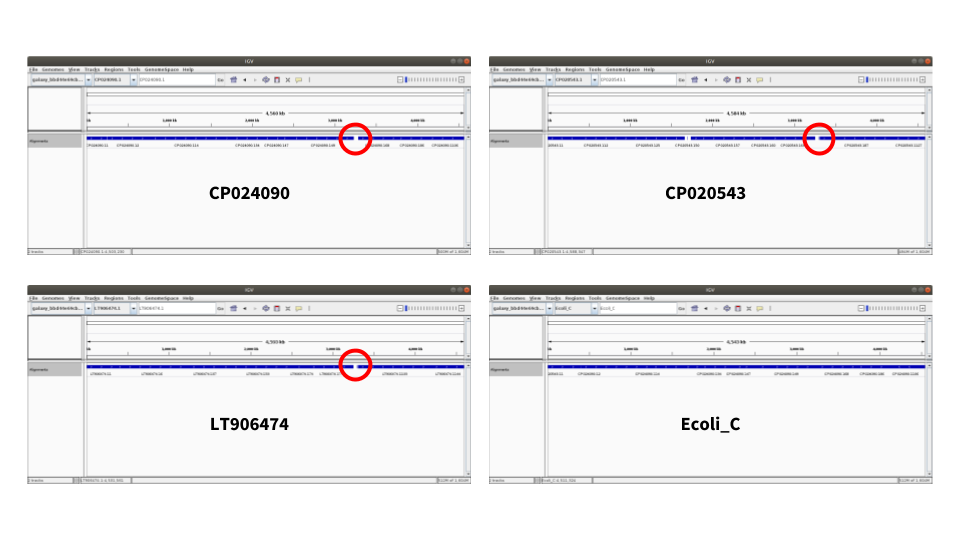
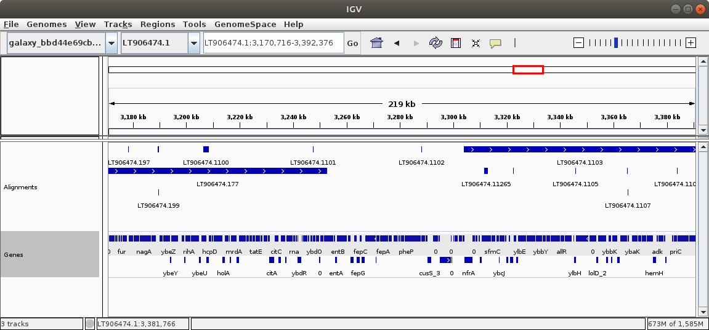
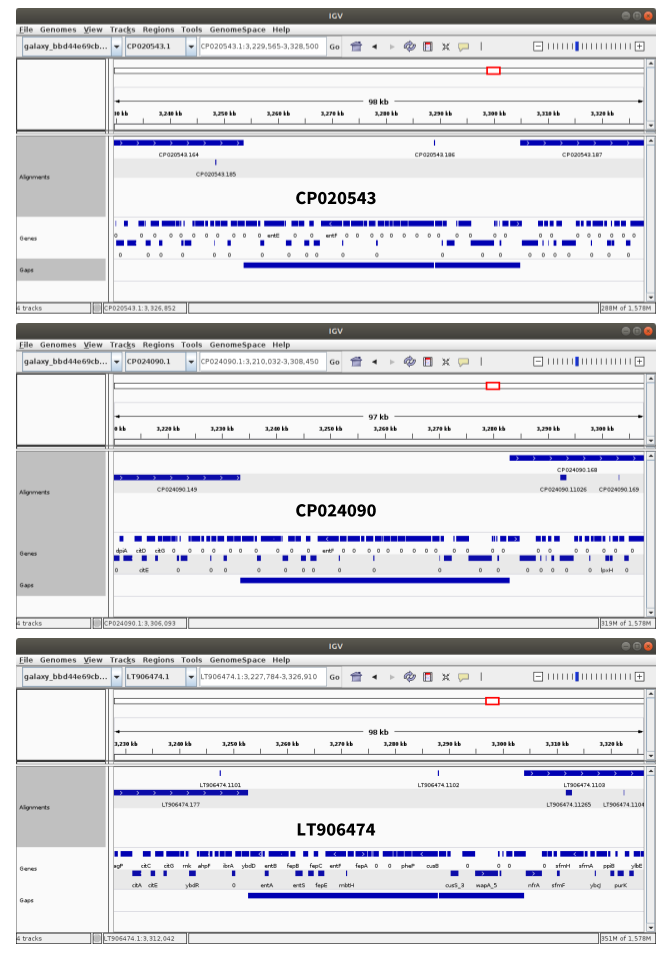

In this tutorial we begin with a new genome assembly just produced in the Unicycler tutorial. This is an assembly of E. coli C, which we will be comparing to assemblies of all other complete genes of this species.
E. coli is one of the most studied organisms. There are hundreds of complete genomes (in fact, the total number of E. coli assemblies in Genbank is over 10,500). Here we will shows how to uploaded all (!) complete E. coli genomes at once.
Getting complete E. coli genomes into Galaxy
Our initial objective is to compare our assembly against all complete E. coli genomes to identify the most related ones and to find any interesting genome alterations. In order to do this we need to align our assembly against all other genomes. And in order to do that we need to first obtain all these other genomes.
NCBI is the resource that would store all complete E. coli genomes. Specifically, they can be found here. As we will see, this list contains over 500 genomes and so uploading them by hand will likely result in carpal tunnel syndrome, which we want to prevent. Galaxy has several features that are specifically designed for uploading and managing large sets of similar types of data. The following two Hands-on sections show how they can be used to import all completed E. coli genomes into Galaxy.
Hands-on: Preparing a list of all complete E. coli genomes
Open the NCBI list of of E. coli genomes in a new window and position two browser windows (one the tutorial and the one you just opened) side by side. Then follow the steps in the following video.
Now that the list is formatted as a table in a spreadsheet, it is time to upload it into Galaxy. There is a problem though → the URLs (web addresses) in the list do not actually point to sequence files that we would need to perform alignments. Instead they point to directories. For example, this URL:
points to a directory (rather than a file) containing many files most of which we do not need:
Figure 1: A list of files for an E. coli assembly. For further analyses we need datasets ending with _genomic.fna.gz.
So to download sequence files we need to edit URLs by adding filenames to them. For example, in the case of the URL shown above we need to add /GCA_000008865.1_ASM886v1 and _genomic.fna.gz to the end to get this:
This can be done as a two step process where we first copy the end part of the existing URL (/GCA_000008865.1_ASM886v1) and then add a fixed string _genomic.fna.gz to the end of it. Doing this by hand is crazy and trying it in a spreadsheet is complicated. Fortunately Galaxy’s new rule-based uploader helps with that as shown in the next Hands-on section:
Hands-on: Data upload
Here we copy data from the spreadsheet described in the previous section into Galaxy’s rule-based uploader to download several hunder complete genomes into a Collection. Follow the steps in the video below.
Now we have all complete E. coli genomes in Galaxy’s history. It is time to do a few things to out assembly.
Preparing assembly
Before starting any analyses we need to upload the assembly produced in Unicycler tutorial from Zenodo:
Uploading E. coli assembly into Galaxy
Upload tool (Upload icon on the top of the left pane)
Click Paste/Fetch data button (Bottom of the interface box)
Paste https://zenodo.org/record/1251125/files/Ecoli_C_assembly.fna into the box.
“Type”: fasta
Click Start
Tip: Finding tools mentioned in this tutorial
Galaxy instances contain hundreds of tools. As a result, it can be hard to find tools mentioned in tutorials such as this one. To help with this challenge, Galaxy has a search box at the top of the left panel. Use this box to find the tools mentioned here.
Figure 2: Use search box to find tools!
The assembly we just uploaded has two issues that need to be addressed before proceeding with our analysis:
It contains two sequences: the one of E. coli C genome (the one we really need) and another representing phage phiX174 (a by product of Illumina sequencing where it is used as a spike-in DNA).
Sequences have unwieldy names like >1 length=4576293 depth=1.00x circular=true. We need to rename it to something more meaningful.
Let’s fix these two problems.
Because phiX173 is around 5,000bp, we can remove those sequences by setting a minimum length of 10,000:
Hands-on: Fixing assembly
Filter sequences by length with the following parameters:
“Fasta file”: the dataset you’ve just uploaded. (https://zenodo.org/record/1251125/files/Ecoli_C_assembly.fna).
“Minimal length”: 10000
Text transformation with sed with the following parameters:
*“File to process”**: the output of the previous step
The expression s/^>1.*$/>Ecoli_C/ contains several pieces that you need to understand. Let’s write it top-to-bottom and explain:
s - tells SED to Substitute
/ - opens a section of the commands telling SED what to substitute
^ - tell SED to start looking at the beginning of each line
> - is the first character we want to match. Remember that name of the sequence in FASTA files starts with >
1 - is the number present is our old name (>1 length=4576293 depth=1.00x circular=true to >Ecoli_C)
. - dot has a special meaning. It signifies any character
* - is a quantifier. From Wikipedia: “The asterisk indicates zero or more occurrences of the preceding element. For example, ab*c matches ac, abc, abbc, abbbc, and so on.”
$ - signifies the end of a line
/ - is the end of the what to substitute section. It also serves as the beginning of what to substitute WITH section
> - is the required element of the FASTA sequence name
Ecoli_C is the name we want the sequence to have
/ - is the end of the SED command
So in short we are replacing >1 length=4576293 depth=1.00x circular=true with >Ecoli_C. The Regular expression^\>1.*$ is used here to represent >1 length=4576293 depth=1.00x circular=true.
Detailed description of regular expressions is outside of the scope of this tutorial, but there are other great resources. Start with Software Carpentry Regular Expressions tutorial.
Questions
What is the meaning of ^ character is SED expression?
Where do you go to learn more about regular expressions?
Solution
It tells SED to start matching from the beginning of the string.
Now everything is loaded and ready to go. We will now align our assembly against each of the E. coli genomes we have uploaded into the collection. To do this we will use LASTZ—an aligner designed for long sequences.
Hands-on: Running LASTZ
LASTZ with the following parameters:
“Select TARGET sequence(s) to align against”: from your history
“Select a reference dataset”: the E. coli genomes we uploaded earlier (collection input)
“Select QUERY sequence(s)”: our assembly which was prepared in the previous step.
“Perform chaining of HSPs with no penalties”: Yes (in Chaining section)
“Specify the output format:: blastn (in Output section)
Note that because we started LASTZ on a collection of E. coli genomes, it will output alignment information as a collection as well. Collection is simply a way to represent large sets of similar data in a compact way within Galaxy’s interface.
It will take a while!
Please understand that alignment is not an instantaneous process: allow several hours for these jobs to clear.
Finding closely related assemblies
Understanding LASTZ output
LASTZ produced data in so-called blastn format (because we explicitly told LASTZ to output in this format, see previous step), which looks like this:
The alignment information produced by LASTZ is a collection. In this collection each element contains alignment data between each of the E. coli genomes and our assembly:
Figure 3: LASTZ produced a collection where each element corresponds to an alignment between an E. coli genome and our assembly. Here one of the elements is expanded (to expand an element simply click on it).
.
Collapsing collection
Collections are a wonderful way to organize large sets of data and parallelize data processing like we did here with LASTZ. However, at this point we need to combine all data into one dataset. Follow the steps below to accomplish this:
Hands-on: Combining collection into a single dataset
Collapse Collection with the following parameters:
“Collection of files to collapse”: the output of LASTZ (collecion input)
This will produce one gigantic table (over 12 million lines) containing combined LASTZ output for all genomes.
Getting taste of the alignment data
To make further analyses we need to get an idea about alignment data generated with LASTZ. To do this let’s select a random subsample of the large dataset we’ve generated above. This is necessary because processing the entire dataset will take time and will not give us a better insight anyway. So first we will select 10,000 lines from the alignment data:
Hands-on: Selecting random subset of data
Select random lines from a file with the following parameters:
“Randomly select”: 10000
“from”: the output from Collapse Collection
Now we can visualize this dataset to discover generalities:
Hands-on: Graphing alignment data
Expand random subset of alignment data generated on the previous step by clicking on it.
You will see “chart” button (). Click on it.
In the center pane you will see a list of visualizations. Select Scatter plot (NVD3)
Click Select data button ()
Set Values for x-axis to Column: 3 (alignment identity)
Set Values for y-axis to Column: 4 (alignment length)
You can also click on configuration button () and specify axis labels etc.
The relationship between the alignment identity and alignment length looks like this (remember that this only a subsample of the data):
Figure 4: Alignment identity (%) versus length (bp). This graph is truncated at teh top
You can see that most alignments are short and have relatively low identity. Thus we can filter the original dataset by identity and length. Judging form this graph we can selected alignment longer than 10,000 bp with identity above 90%.
Hands-on: Filtering data
Filter data on any column using simple expressions with the following parameters:
“Filter”: the full dataset.
“With following condition”: c3 >= 90 and c4 >= 10000 (here c stands for column).
Remember, our objective is to find genomes that are most similar to our. Given the alignment data in the table we just created we can define similarity as follows:
Genomes that have the smallest number of alignment blocks but the highest overall alignment length are most similar to our assembly. This essentially means that they have longest uninterrupted region of high similarity to our assembly.
However, to extract this information from our data we need to aggregate it. In other words, for each E. coli genome we need to calculate the total number of alignment blocks, their combined length, and average identity. The following section explain how to do this:
Hands-on: Aggregating the data
Datamash (operations on tabular data) with the following parameters:
“Input tabular dataset”: output of the previous Filter step.
“Group by fields”: 1. (column 1 contains name of the E. coli genome we mapped against)
“Sort input”: Yes
“Operation to perform on each group”:
“Type”: Count
“On column”: Column: 1
Click Insert operation to perform on each group button twice to add two more input boxes.
“Operation to perform on each group”:
“Type”: Mean
“On column”: Column: 3.
“Operation to perform on each group”:
“Type”: Sum
“On column”: Column: 4
Finding closest relatives
Dataset generated above lists each E. coli genome accession only once and will have aggregate information of the number of alignment blocks, mean identity, and total length. Let’s graph these data:
Hands-on: Graphing aggregated data
Expand the aggregated data generated on the previous step by clicking on it.
You will see “chart” button (). Click on it.
In the center pane you will see a list of visualizations. Select Scatter plot (NVD3)
Click Select data button ()
Set Data point labels to Column: 1 (Accession number of each E. coli genome)
Set Values for x-axis to Column: 2 (# of alignment blocks)
Set Values for y-axis to Column: 4 (Total alignment length)
You can also click on configuration button () and specify axis labels etc.
The relationship between the number of alignment blocks and total alignment length looks like this:
Figure 5: Number of alignment blocks versus total alignment length (bp).
A group of three dots in the upper left corner of this scatter plot represents genomes that are most similar to our assembly: they have SMALL number of alignment blocks but HIGH total alignment length. Mousing over these three dots (if you set Data point labels correctly in the previous step) will reveal their accession numbers: LT906474.1, CP024090.1, and CP020543.1.
Things change
It is possible that when you will be repeating these steps the set of sequences in NCBI will change and you will obtain different accession numbers. Keep this in mind.
Let’s find table entries corresponding to these:
Hands-on: Extracting into about best hits
Select lines that match an expression with the following parameters:
“Select lines from”: to the output from Datamash
“the pattern”: LT906474|CP024090|CP020543. (Here | means or).
From this it appears that LT906474.1 is closes to our assembly as it has eight alignment blocks, longest total alignment length (4,575,223) and highest mean identity (99.94%).
Comparing genome architectures
Now that we know the three genomes most closely related to ours, let’s take a closer look at them. First we will re-download sequence and annotation data.
Getting sequences and annotations
Hands-on: Uploading sequences and annotations
Using the three accession listed above we will fetch necessary data from NCBI. Follow the steps in the video below:
At the end of this you should have two collections: one containing genomic sequences and another containing annotations.
Visualizing rearrangements
Now we will perform alignments between our assembly and the three most closely related genomes to get a detailed look at any possible genome architecture changes. We will again use LASTZ:
Hands-on: Aligning again
LASTZ with the following parameters:
“Select TARGET sequence(s) to align against”: from your history
“Select a reference dataset”: dataset collection of the three genomes (in the video above we called it DNA)
“Select QUERY sequence(s)”: our assembly which was prepared in the beginning (Text transformation on data...)
“Perform chaining of HSPs with no penalties”: Yes (section Chaining)
“Specify the output format”: to Customized general (section Output)
“Select which fields to include”: select the following
score alignment score
name1 name of the target sequence
strand strand for the target sequence
zstart 0-based start of alignment in target
end1 end of alignment in target
length1 length of alignment in target
name2 name of query sequence
strand2 strand for the query sequence
zstart2 0-based start of alignment in query
end2 end of alignment in query
identity alignment identity
number alignment number
“Create a dotplot representation of alignments?”: Yes
Note: for more information about chaining look here
Because we chose to produce Dot Plots as well LASTZ will generate two collections: one containing alignment data and the other containing DotPlots in PNG format:
Figure 6: Dot Plot representations of alignments between three E. coli genomes and our assembly. Target (X-axis) is indicated above each dot plot. Query (Y-axis) is our assembly. Red circle indicates a region deleted in our assembly.
A quick conclusion that can be drawn here is that there is a large inversion in CP020543 and deletion in our assembly. If you are not sure how to interpret Dot Plots here is a great explanation by Michael Schatz:
Figure 7: A quick reference to interpreting Dot Plots. Our case is identical to Insertion into Reference shown in the upper left.
For a moment let’s leave LASTZ result and create a browser that would allows us to display our results.
Producing a Genome Browser for this experiment
Dot plots we’ve produced above are great, but they are static. It would be wonderful to load these data into a genome browser where one can zoom in and out as well as add tracks such as those containing genes. To create a browser we need a genome and a set of tracks. Tracks are features such as genes or SNPs with start and end positions corresponding to a coordinate system provided by the genome. Thus the first thing to do is to create a genome that would represent our experiment. We can create such a genome by simply combining the three genomes of closely related strains with our assembly in a single dataset—a hybrid genome.
First step will be collapsing the collection containing the three genomes into a single file:
Hands-on: Creating a single FASTA dataset with all genomes
Collapse Collection with the following parameters:
“Collection of files to collapse” the three genomes (collection) (in the video above we called it best hits).
This will produce a single FASTA dataset containing the three genomes. There is one problem though. If we look at the data in this file, we will see that FASTA headers look like this:
>CP020543.1 Escherichia coli C, complete genome
This is a problem because a browser will “think” that this particular genome is called CP020543.1 Escherichia coli C, complete genome while in the alignment files produced by LASTZ the same genome will be listed as simply CP020543.1. Because these two seemingly identical things are technically different it will not be possible to render alignment results (or any other annotation) within a browser. To solve this issue we simply need to remove Escherichia coli C, complete genome from >CP020543.1 Escherichia coli C, complete genome and convert it into >CP020543.1. For this we will use sed tool we already used above to prepare assembly files:
Hands-on: Cleaning sequence names
Text transformation with sed with the following parameters:
“File to process”: output of collapse collection
“SED program”: s/\ Esc.*$//
Note: Here we are matching from space (\ ) separating CP020543.1 and Escherichia coli C, complete genome and substituting this with nothing.
To make sure that everything completed correctly let’s grab FASTA headers from all sequences in the dataset produced by the last tool:
Hands-on: “Grepping” FASTA headers
Search in textfiles (grep) with the following parameters:
“Select lines from”: output of the previous step (Text transformation)
“Regular Expression”: ^>
Note: This tells to return all line that begin with > (^ signifies beginning of a line).
If everything went well we will see something like this:
>CP020543.1
>CP024090.1
>LT906474.1
Finally, we need to add our own assembly to the FASTA dataset containing the three genomes. This can be done by a simple concatenation:
Hands-on: Concatenate FASTA files
Concatenate datasets tail-to-head (cat) with the following parameters:
“Datasets to concatenate”: output of sed tool we performed one step ago (before last step; it is called Text transformation on...)
Click Insert Dataset button
“Select”: our assembly (its name also begins with Text transformation on... but is located earlier in the history)
The resulting dataset contains four sequences: three genomes plus our assembly. Let’s start a browser using these sequences:
Hands-on: Starting a custom IGV browser
Go to IGV web page and launch a browser appropriate for your platform. Wait for it to start. It will display human genome, but we will change that.
Go back to your Galaxy session and expand the dataset generated during the last step.
Click on local link in display with IGV local
Wait a bit and IGV will refresh displaying “chromosomes” of our hybrid genome:
Figure 8: IGV instance displaying Hybrid genome without tracks
Preparing and displaying alignments
Above we computed alignments using LASTZ. Because we ran LASTZ on a collection containing genomic sequences, LASTZ produced a collection as well (actually two collections: one containing alignments an the other with dot plots). To display alignments in the browser we need to do several things:
One immediate problem is % character in column 12 (alignment identity). We need to remove it. For this we will use SED tool that should be familiar to us from previous hands-on exercises:
Hands-on: Removing % character from LASTZ output
Text transformation with sed with the following parameters:
“File to process”: output of LASTZ (LASTZ on collection ...: mapped reads)
“SED program”: s/\%//
Note: Here we are matching percent character % (it is pre-pended with \ because it is a special character, but we want sed to interpret it literally, as the percentage sign) and substituting this with nothing.
As a result LASTZ output will look like this (no % signs):
One of the fields chosen by us for LASTZ run is number. This is an incrementing number given by LASTZ to every alignment block so it can be uniquely identified. The problem is that by running LASTZ on a collection on three genomes it generated number for each output independently starting with 1 each time. So these alignment identified are unique within each individual run but are redundant for multiple runs. We can fix that by pre-pending each alignment identified (column 13) with name of the target sequence (column 2). This would create alignment identified that are truly unique. For example, in case of LASTZ output shown above alignment identifier 1 will become CP020543.11, 2 will become CP020543.12 and so on. Here is how we will do that:
Hands-on: Creating unique alignment identifiers
Merge Columns together with the following parameters:
“Select data”: the output of the previous step (Text transformation of collection ...)
“Merge column”: Column: 2 (this is Targe sequence name)
“with column”: Column: 13 (this is the alignment block identified created by LASTZ)
The tool added a new column (Column 14) containing a merge between the target name and alignment id. Now we can differentiate between alignment blocks that exist between, for example, CP020543.1 and LT906474.1 because they will have accessions embedded within alignment block IDs. For example, the first alignment between CP020543.1 and our assembly Ecoli_C will have alignment block id CP020543.11, while the 225th alignment between LT906474.1 and Ecoli_C will have ID LT906474.1225. Because of this we can collapse the entire collection of alignments into a single dataset:
Hands-on: Collapsing all alignment info into a single dataset
Collapse Collection with the following parameters:
“Collection of files to collapse”: the output of the previous step, Merge Columns on collection... (collection input)
This will produce a single datasets combining all alignment info. We can tell which alignments are between which genomes because we have set identifiers such as CP020543.13.
Tip: BED format
Our next goals is to convert this into a format that will be acceptable to the genome browser created above. One of such formats is BED. In one of its simplest forms (there is one even simpler - 3 column BED) it has six columns:
Chromosome ID
Start
End
Name of the feature
Score (must be between 0 and 1000)
Strand (+, -, or . for no strand data).
Let’s again look at the data we generated at the last step:
Alignments are regions of high similarity between two sequences. Therefore each alignment block has two sets of coordinates associated with it: start/end in the first sequences (target) and start/end in the second sequence (query). But BED only has one set of coordinates. Thus we can create two BEDs: one using coordinates from the target and the other one from query. The first file will depict alignment data from the standpoint of target sequences CP020543.1, CP024090.1, LT906474.1 and the second from the standpoint of query - our own assembly we calledEcoli_C. In the first BED column 1 will contain names of targets (CP020543.1, CP024090.1, and LT906474.1). In the second BED column 1 will contain name of our assembly Ecoli_C. To create the first bed we will cut six columns from the dataset produced at the last step. Specifically, to produce target BED will cut columns 2, 4, 5, 14, 12, and 8. To produce query BED columns 7,9,10,14,12,8 will be cut.
There are multiple CUT tools!
The Hands-On box below uses Cut tool. Beware that some Galaxy instances contain multiple Cut tools. The one that is used below is called Cut columns from a table while the other one, which we will NOT use is called Cut columns from a table (cut). It is a small difference, but tools are different.
Hands-on: Creating target BED
Cut columns from a table with the following parameters:
“Cut columns:: c2,c4,c5,c14,c12,c8 (look at the data shown above and definition of BED to see why we make these choices.)
“From”: the output of the previous step (Collapse Collection on data ...)
Now we can merge these two datasets into a single BED datasets that will be ready for displaying in the browser:
Hands-on: Merging Target and Query BEDs
Concatenate datasets tail-to-head with the following parameters:
“Concatenate Dataset”: the output of the step before last (Cut on data...)
Click “Insert Dataset” button
“1: Dataset”: the output of the previous step (also Cut on data...)
Now we have a single BED that combines everything. Before displaying it in the browser we need to tell Galaxy that it is in fact a BED dataset:
Hands-on: Changing dataset type
Click the pencil () icon next to the last dataset in the history.
Once we are at it let’s also rename the dataset to Alignments BED by changing the content of the Name box.
Click Datatypes () tab
In the dropdown New Type find bed
Click Change datatype button.
Now we are ready to display these data in the browser (make sure the browser we’ve created above is open):
Hands-on: Display alignments in the browser
Expand the latest data (the one we just changed to bed above)
You will see display with IGV local. Click this.
After a few minutes you will see alignments rendered within the browser.
If you get Could not locate genome: error ignore it and click OK.
Tip: Naming IGV tracks
At the time of writing dataset sent by Galaxy to IGV have uninformative names such as galaxy_bbd44h445645h45454. While this will soon be fixed we can deal with it by renaming the displayed track manually by right clicking on IGV sidebar and choosing Rename Track.. option.
The result will look like this:
Figure 9: A collage of IGV screen-shots showing alignment tracks for the four genomes. The deletion from our assembly is highlighted with the red circle. It looks like a gap in alignments because target genomes are longer than our assembly by the amount equal to the length of the deletion.
Now it is time to think about the genes.
Analyzing the deletion for gene content
Earlier we downloaded gene annotations for the three genomes most closely related to our assembly. The data was downloaded as a collection containing annotation for CP020543.1, CP024090.1, and LT906474.1. The annotation data contains multiple columns described by NCBI as follows (you can look at the actual data by finding the annotation collection from above (called GENES if you followed the video):
Tab-delimited text file reporting locations and attributes for a subset of
annotated features. Included feature types are: gene, CDS, RNA (all types),
operon, C/V/N/S_region, and V/D/J_segment.
The file is tab delimited (including a #header) with the following columns:
col 1: feature: INSDC feature type
col 2: class: Gene features are subdivided into classes according to the gene
biotype computed based on the set of child features for that gene. See
the description of the gene_biotype attribute in the GFF3 documentation
for more details: ftp://ftp.ncbi.nlm.nih.gov/genomes/README_GFF3.txt
ncRNA features are subdivided according to the ncRNA_class. CDS features
are subdivided into with_protein and without_protein, depending on
whether the CDS feature has a protein accession assigned or not. CDS
features marked as without_protein include CDS features for C regions and
V/D/J segments of immunoglobulin and similar genes that undergo genomic
rearrangement, and pseudogenes.
col 3: assembly: assembly accession.version
col 4: assembly_unit: name of the assembly unit, such as "Primary Assembly",
"ALT_REF_LOCI_1", or "non-nuclear"
col 5: seq_type: sequence type, computed from the "Sequence-Role" and
"Assigned-Molecule-Location/Type" in the *_assembly_report.txt file. The
value is computed as:
if an assembled-molecule, then reports the location/type value. e.g.
chromosome, mitochondrion, or plasmid
if an unlocalized-scaffold, then report "unlocalized scaffold on <type>".
e.g. unlocalized scaffold on chromosome
else the role, e.g. alternate scaffold, fix patch, or novel patch
col 6: chromosome
col 7: genomic_accession
col 8: start: feature start coordinate (base-1). start is always less than end
col 9: end: feature end coordinate (base-1)
col10: strand
col11: product_accession: accession.version of the product referenced by this
feature, if exists
col12: non-redundant_refseq: for bacteria and archaea assemblies, the
non-redundant WP_ protein accession corresponding to the CDS feature. May
be the same as column 11, for RefSeq genomes annotated directly with WP_
RefSeq proteins, or may be different, for genomes annotated with
genome-specific protein accessions (e.g. NP_ or YP_ RefSeq proteins) that
reference a WP_ RefSeq accession.
col13: related_accession: for eukaryotic RefSeq annotations, the RefSeq protein
accession corresponding to the transcript feature, or the RefSeq
transcript accession corresponding to the protein feature.
col14: name: For genes, this is the gene description or full name. For RNA, CDS,
and some other features, this is the product name.
col15: symbol: gene symbol
col16: GeneID: NCBI GeneID, for those RefSeq genomes included in NCBI's Gene
resource
col17: locus_tag
col18: feature_interval_length: sum of the lengths of all intervals for the
feature (i.e. the length without introns for a joined feature)
col19: product_length: length of the product corresponding to the
accession.version in column 11. Protein product lengths are in amino acid
units, and do not include the stop codon which is included in column 18.
Additionally, product_length may differ from feature_interval_length if
the product contains sequence differences vs. the genome, as found for
some RefSeq transcript and protein products based on mRNA sequences and
also for INSDC proteins that are submitted to correct genome
discrepancies.
col20: attributes: semi-colon delimited list of a controlled set of qualifiers.
The list currently includes:
partial, pseudo, pseudogene, ribosomal_slippage, trans_splicing,
anticodon=NNN (for tRNAs), old_locus_tag=XXX
Our objective is convert these data into BED. In this analysis we want to initially concentrate on protein coding regions. To do this let’s select all lines from the annotation datasets that contain the term CDS:
Hands-on: Retain CDS rows in annotation datasets
Select lines that match an expression with the following parameters:
“Select lines from”: the collection containing annotations (called GENES)
“the pattern”: ^CDS
Note: This is because we want to retain all lines that begin (^) with CDS.
This will produce a collection with three datasets just like the original GENES collection but containing only CDS data. Next we need to cut out only those columns that need to be included in the BED format. There is one problem with this. We are trying to convert these data into 6 column BED. In this format the fifth column (score) must have a value between 0 and 1000. To satisfy this requirement we will create a dummy column that will always have a value of 0:
Hands-on: Creating a dummy score column
Add column to an existing dataset with the following parameters:
“Add this value”: 0
“to Dataset”: the collection produced by the previous step (Select on collection...)
This will create a 21st column containing 0 for all rows. Now we can cut necessary columns from these datasets. These columns are 8 (start), 9 (end), 15 (gene symbol), 21 (dummy column we just created), and c10 (strand). Note that we do not select a column corresponding to genome name. We will add this information on the next step.
Hands-on: Cutting columns form annotation data
Cut columns from a table with the following parameters:
“Cut columns”: c8,c9,c14,c19,c10
“From” the collection produced at the previous step (Select on collection...)
This will produce a collection with each element containing data like this:
1 2 3 4 5
------------------------------------------------------------
49 1452 chromosomal replication initiator protein DnaA 0 +
1457 2557 DNA polymerase III subunit beta 0 +
2557 3630 DNA replication and repair protein RecF 0 +
As we mentioned above this datasets lacks genome IDs such as CP020543.1. However, the individual elements in the collection we’ve created already have genomes IDs (if you are unsure make sure you followed direction when creating collection containing annotations). We will leverage this while collapsing this collection into a single dataset:
Hands-on: Collapsing annotations into a single BED dataset
Collapse Collection with the following parameters:
“Collection of files to collapse”: the output of the previous step (Cut on collection...)
“Append File name”: Yes
“Where to add dataset name”: Same line and each line in dataset
Resulting data looks like this:
1 2 3 4 5 6
-----------------------------------------------------------------------
CP020543.1 49 1452 chromosomal replication initiator protein DnaA 0 +
CP020543.1 1457 2557 DNA polymerase III subunit beta 0 +
CP020543.1 2557 3630 DNA replication and repair protein RecF 0 +
you can see that the genome ID is now appended in the beginning and this dataset looks like a legitimate BED that can be displayed in IGV. The one thing that remains is to tell Galaxy that it is BED as we did before. After the format of the last dataset is set to BED it can displayed at IGV by clicking display with IGV local link (remember to give this new track a “humane” name):
Figure 10: Gene track is added to the browser. Here we are zoomed in at the gap region in LT906474.
Extracting deleting genes programmatically
Above we’ve been able to look at genes that appear deleted in our assembly. But what we really need is to create a list that can be interrogated further. For example, which of these genes are essential? We can easily create such a list by overlapping coordinates of genes with coordinates of our deletion. But to do this we first need to create a set of coordinates corresponding to the deletion. This can be done by complementing coordinates of alignments we created above:
Figure 11: Any set of genomic intervals can complemented or converted into a set of intervals that do not overlap the original set (image from BEDTools documentation).
However, before we convert coordinates of aligned into their complement we need to prepare so called genome file, which is a list of “chromosomes” and their lengths in our hybrid genome:
Hands-on: Creating a genome file
Compute sequence length with the following parameters:
you will notice that all three genomes have a region starting past 3,200,000 and only CP020543.1 has another region starting at 1,668,702. However, this region reflects some unique feature of CP020543.1 rather than that of our assembly. This is why we will concentrate on common region which is deleted in our genome, but is present in the three closely related E. coli strains:
Hands-on: Restricting list of deleted region to the common deletion
Filter data on any column using simple expressions with the following parameters:
“Filter”: dataset from the last step (Filter on data...)
Figure 14: Close up of deleted region (this region is deleted from our assembly and looks like a gap when our assembly is aligned to genomic sequences shown here). In CP0205543 and LT906474 the continuity of the region is interrupted by small aligned region that relatively low identity (~72%). This is a spurious alignment and can be ignored.
Now we are ready to intersect these regions with gene coordinates we formatted earlier:
Hands-on: Finding genes deleted in our assembly
Intersect intervals find overlapping intervals in various ways with the following parameters:
“File A to intersect with B”: output of the previous step
“File(s) B to intersect with A”: gene annotations in BED format
“What should be written to the output file?”: Write the original A and B entries plus the number of base pairs of overlap between the two features. Only A features with overlap are reported. Restricted by the fraction- and reciprocal option (-wo)
As a result we will get a list of all genes that overlap with the positions of the deletion. Because of the parameters we have select the tool joins rows from the two datasets if their coordinates overlap:
Goodall et al. (2018) have recently published a list of essential genes for E. coli K-12. We can use their data to answer this question. This paper contains a supplementary file in Excel format listing genes and whether they are essential or not. To actually use these data we need to first convert it into TAB-delimited format. This can be done using any spreadsheet application such as Google Sheets:
Hands-on: Converting a list of essential genes to TAB-delimited format
We learned how to download large sets of completed genomes from NCBI
We learned how to use Galaxy's rule-based collection builder
We learned how to use a combination of Galaxy tools to create complex views of genome comparisons
We learned about idiosyncrasies of data formats and how to deal with them using Galaxy tools
Useful literature
Further information, including links to documentation and original publications, regarding the tools, analysis techniques and the interpretation of results described in this tutorial can be found here.
Congratulations on successfully completing this tutorial!
Help us improve this content!
Please take a moment to fill in the Galaxy Training Network
Feedback Form.
Your feedback helps us improve this tutorial and will be considered
in future revisions.


.")
)
) and specify axis labels etc.
 versus length (bp). This graph is truncated at teh top")
.")
 is indicated above each dot plot. Query (Y-axis) is our assembly. Red circle indicates a region deleted in our assembly.")


.")